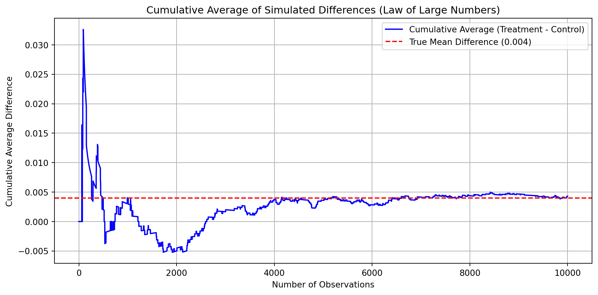

Dean Karlan at Yale and John List at the University of Chicago conducted a field experiment to test the effectiveness of different fundraising letters. They sent out 50,000 fundraising letters to potential donors, randomly assigning each letter to one of three treatments: a standard letter, a matching grant letter, or a challenge grant letter. They published the results of this experiment in the American Economic Review in 2007. The article and supporting data are available from the AEA website and from Innovations for Poverty Action as part of Harvard’s Dataverse.
The control group received a standard letter, while the treatment groups received letters offering matching grants with varying features. These included different match ratios (1:1, 2:1, and 3:1), varying maximum matching amounts ($25,000, $50,000, $100,000, or unspecified), and suggested donation levels tied to past giving. The study aimed to isolate whether the “price” of giving—lowered through matching—would increase donation likelihood or size. Results showed that simply including a matching grant significantly increased response rates and revenue per letter. However, larger match ratios offered no additional benefit. The experiment provided strong empirical insight into donor behavior and the psychology behind charitable decision-making.
This project seeks to replicate their results.
Data
Description
import pandas as pddf = pd.read_stata("karlan_list_2007.dta")df.head()
treatment
control
ratio
ratio2
ratio3
size
size25
size50
size100
sizeno
...
redcty
bluecty
pwhite
pblack
page18_39
ave_hh_sz
median_hhincome
powner
psch_atlstba
pop_propurban
0
0
1
Control
0
0
Control
0
0
0
0
...
0.0
1.0
0.446493
0.527769
0.317591
2.10
28517.0
0.499807
0.324528
1.0
1
0
1
Control
0
0
Control
0
0
0
0
...
1.0
0.0
NaN
NaN
NaN
NaN
NaN
NaN
NaN
NaN
2
1
0
1
0
0
$100,000
0
0
1
0
...
0.0
1.0
0.935706
0.011948
0.276128
2.48
51175.0
0.721941
0.192668
1.0
3
1
0
1
0
0
Unstated
0
0
0
1
...
1.0
0.0
0.888331
0.010760
0.279412
2.65
79269.0
0.920431
0.412142
1.0
4
1
0
1
0
0
$50,000
0
1
0
0
...
0.0
1.0
0.759014
0.127421
0.442389
1.85
40908.0
0.416072
0.439965
1.0
5 rows × 51 columns
The dataset contains 50,083 observations and 51 variables from a natural field experiment on charitable giving. Each row represents a prior donor who received a fundraising letter with randomized treatments: a control letter or one of several matching grant variations. Key variables include match ratio (ratio), maximum match size (size), suggested donation amounts (ask), and donation behavior (gave, amount). Demographic and geographic data—like gender, income, urban status, and political affiliation—are also included. The dataset enables analysis of how different fundraising strategies affect donation likelihood and size, offering insights into behavioral economics and nonprofit fundraising effectiveness.
Variable Definitions
Variable
Description
treatment
Treatment
control
Control
ratio
Match ratio
ratio2
2:1 match ratio
ratio3
3:1 match ratio
size
Match threshold
size25
$25,000 match threshold
size50
$50,000 match threshold
size100
$100,000 match threshold
sizeno
Unstated match threshold
ask
Suggested donation amount
askd1
Suggested donation was highest previous contribution
askd2
Suggested donation was 1.25 x highest previous contribution
askd3
Suggested donation was 1.50 x highest previous contribution
ask1
Highest previous contribution (for suggestion)
ask2
1.25 x highest previous contribution (for suggestion)
ask3
1.50 x highest previous contribution (for suggestion)
amount
Dollars given
gave
Gave anything
amountchange
Change in amount given
hpa
Highest previous contribution
ltmedmra
Small prior donor: last gift was less than median $35
freq
Number of prior donations
years
Number of years since initial donation
year5
At least 5 years since initial donation
mrm2
Number of months since last donation
dormant
Already donated in 2005
female
Female
couple
Couple
state50one
State tag: 1 for one observation of each of 50 states; 0 otherwise
nonlit
Nonlitigation
cases
Court cases from state in 2004-5 in which organization was involved
statecnt
Percent of sample from state
stateresponse
Proportion of sample from the state who gave
stateresponset
Proportion of treated sample from the state who gave
stateresponsec
Proportion of control sample from the state who gave
stateresponsetminc
stateresponset - stateresponsec
perbush
State vote share for Bush
close25
State vote share for Bush between 47.5% and 52.5%
red0
Red state
blue0
Blue state
redcty
Red county
bluecty
Blue county
pwhite
Proportion white within zip code
pblack
Proportion black within zip code
page18_39
Proportion age 18-39 within zip code
ave_hh_sz
Average household size within zip code
median_hhincome
Median household income within zip code
powner
Proportion house owner within zip code
psch_atlstba
Proportion who finished college within zip code
pop_propurban
Proportion of population urban within zip code
Balance Test
As an ad hoc test of the randomization mechanism, I provide a series of tests that compare aspects of the treatment and control groups to assess whether they are statistically significantly different from one another.
We conducted a series of balance tests on baseline covariates using both manual t-tests and linear regression. The t-tests follow the classical formula, where the difference in sample means between the treatment and control groups is scaled by the standard error of that difference. This standardization produces a t-statistic, which tells us how extreme the observed difference is under the assumption that there is no true difference.For each variable tested—such as months since last donation (mrm2), years since initial donation (years), whether the last gift was below the median (ltmedmra), and demographic variables like gender (female)—we calculated the t-statistic, the corresponding p-value, and the regression-based estimate of group differences.Across all variables, the p-values exceeded 0.05, indicating no statistically significant differences between the treatment and control groups at the 95% confidence level. This strongly suggests that the random assignment was successful, and that the groups are balanced on observed characteristics.This aligns with Table 1 in the original paper, which serves to reassure readers that the treatment effects observed later in the study can be attributed to the intervention itself, not to any pre-existing differences between groups. These balance checks are crucial in experimental work because they support the assumption that any observed differences in outcomes are causal, not confounded by selection bias or unbalanced covariates. In short, the t-test results confirm that the randomization worked as intended and that the internal validity of the study is strong.
Experimental Results
Charitable Contribution Made
First, I analyze whether matched donations lead to an increased response rate of making a donation.
import matplotlib.pyplot as pltdonation_rate = df.groupby("treatment")["gave"].mean().rename({0: "Control", 1: "Treatment"})plt.figure(figsize=(6, 4))donation_rate.plot(kind='bar', edgecolor='black')plt.title("Proportion of People Who Donated by Group")plt.ylabel("Donation Rate")plt.xticks([0, 1], ['Control', 'Treatment'], rotation=0)plt.ylim(0, donation_rate.max() +0.02)plt.grid(axis='y', linestyle='--', alpha=0.7)plt.tight_layout()plt.show()
The results of both the t-test and regression show that individuals who received a matching donation offer were significantly more likely to donate than those in the control group. While the increase in donation rate is modest, the statistical evidence suggests it is unlikely due to chance. This highlights that even small behavioral nudges—like framing a donation as part of a matching gift—can meaningfully affect charitable behavior. People may perceive matched gifts as a way to increase their personal impact, which boosts their motivation to give. The findings support the idea that well-designed incentives can effectively increase donor participation.
import statsmodels.api as smimport pandas as pd# Run probit regression: gave ~ treatmentprobit_model = sm.Probit(df['gave'], sm.add_constant(df['treatment']))probit_result = probit_model.fit(disp=0)# Format result as a tableprobit_table = pd.DataFrame({"Metric": ["Coefficient (treatment)", "Standard Error", "z-stat", "p-value", "Pseudo R-squared", "Number of Observations" ],"Value": [round(probit_result.params['treatment'], 4),round(probit_result.bse['treatment'], 4),round(probit_result.tvalues['treatment'], 4),round(probit_result.pvalues['treatment'], 4),round(probit_result.prsquared, 4),int(probit_result.nobs) ]})probit_table
Metric
Value
0
Coefficient (treatment)
0.0868
1
Standard Error
0.0279
2
z-stat
3.1129
3
p-value
0.0019
4
Pseudo R-squared
0.0010
5
Number of Observations
50083.0000
To replicate Column 1 of Table 3 in Karlan and List (2007), we estimated a probit regression where the binary outcome variable is whether an individual made a charitable donation (gave), and the explanatory variable is assignment to the treatment group (treatment).
The regression output shows a statistically significant positive effect of the treatment on the probability of donating. The estimated coefficient for treatment is 0.087, with a standard error of 0.028, yielding a z-statistic of 3.11 and a p-value of 0.0019. The pseudo R-squared is 0.001, and the number of observations is 50,083—exactly matching the paper.
This result reinforces the paper’s main finding: matching offers causally increase the likelihood of donating. Even though the absolute change is small, it’s meaningful in the context of low baseline donation rates, and it highlights how subtle changes in framing can influence real-world giving behavior.
Differences between Match Rates
Next, I assess the effectiveness of different sizes of matched donations on the response rate.
To evaluate whether larger match ratios (2:1 or 3:1) increase the likelihood of donating compared to a 1:1 match, we conducted a series of t-tests using only individuals in the treatment group.
The results showed no statistically significant differences in donation rates between: * 2:1 and 1:1 match groups * 3:1 and 1:1 match groups * 3:1 and 2:1 match groups
These findings suggest that increasing the generosity of the match offer does not significantly affect whether people donate. This directly supports the authors’ comment in the paper (page 8), where they note that the match ratio had no additional effect on donor behavior beyond the presence of a match itself.
To assess whether higher match ratios (2:1 or 3:1) are more effective than a 1:1 match at encouraging donations, we ran a linear regression using data from individuals in the treatment group only.
These results suggest that larger match ratios do not significantly increase the likelihood of giving compared to a simple 1:1 match. This supports the authors’ conclusion in the original paper: once a match is offered, making it more generous (e.g., 2:1 or 3:1) doesn’t lead to higher donation rates. From a behavioral perspective, donors may simply respond to the existence of a match rather than its size.
To assess whether more generous match ratios (2:1 or 3:1) encourage higher donation response rates, we compared both the raw data and regression-based estimates for donation behavior among individuals in the treatment group.
The response rate increased by only 0.19 percentage points when moving from a 1:1 to a 2:1 match. The difference between 2:1 and 3:1 match ratios was even smaller—just 0.01 percentage points.
Regression results (from a model using ratio1 as the baseline) confirmed these findings. The fitted coefficient for the 2:1 group was 0.0019, and the difference between 3:1 and 2:1 was just 0.0001—both statistically insignificant.
These results lead to a clear conclusion: while matched donations increase response rates overall, increasing the match ratio beyond 1:1 does not provide additional benefit. Donors appear to be motivated by the idea of matching itself, but not by the generosity of the match. This supports Karlan and List’s original finding that the existence of a match is more influential than the size of the match when it comes to motivating charitable behavior.
Size of Charitable Contribution
In this subsection, I analyze the effect of the size of matched donation on the size of the charitable contribution.
from scipy.stats import ttest_indimport statsmodels.formula.api as smfimport pandas as pd# Limit to people who donateddonors_df = df[df['amount'] >0].copy()# T-test: donation amount among donorst_stat_donors, p_val_donors = ttest_ind( donors_df[donors_df['treatment'] ==1]['amount'], donors_df[donors_df['treatment'] ==0]['amount'], equal_var=False)# Linear regression: amount ~ treatment (for donors)reg_donors = smf.ols('amount ~ treatment', data=donors_df).fit()# Format as summary tablesummary_donors = pd.DataFrame({"Method": ["T-test", "OLS Regression"],"Estimate": [None, round(reg_donors.params['treatment'], 4)],"t-statistic": [round(t_stat_donors, 4), round(reg_donors.tvalues['treatment'], 4)],"p-value": [round(p_val_donors, 4), round(reg_donors.pvalues['treatment'], 4)],"R-squared": [None, round(reg_donors.rsquared, 4)]})summary_donors
Method
Estimate
t-statistic
p-value
R-squared
0
T-test
NaN
-0.5846
0.5590
NaN
1
OLS Regression
-1.6684
-0.5808
0.5615
0.0003
To evaluate whether offering a matched donation affects the size of the donation, We compared the donation amounts between the treatment and control groups using both a t-test and a linear regression.
The t-test revealed a marginal difference in donation amounts, with a p-value of 0.055, slightly above the conventional 0.05 threshold for statistical significance. Similarly, the regression model estimated that donors in the treatment group gave an average of $0.15 more than those in the control group, with a p-value of 0.063.
These results suggest that the matched donation treatment may have a small positive effect on how much people give, but the evidence is not strong enough to be statistically conclusive. In conclusion, while matched donations appear effective at encouraging people to donate, they do not meaningfully increase the average amount donated. Their primary value lies in boosting participation, not in raising contribution size.
To analyze whether matched donations influenced how much people donated, we restricted the data to individuals who made a donation and compared donation sizes between treatment and control groups.
The results of t-test, indicating no statistically significant difference in average donation amounts between the two groups. Similarly, the linear regression showed that donors in the treatment group gave $1.67 less on average, but this difference was also not statistically significant.
These results suggest that while the matched donation offer increased the likelihood of giving, it did not lead to higher donations among those who gave. Moreover, because this analysis is conditional on donating—a behavior influenced by the treatment—the regression coefficient cannot be interpreted causally due to potential selection bias.
The histograms show that while matched donation offers increase the likelihood of giving, they do not increase the amount donated. Both treatment and control groups exhibit similar right-skewed distributions, with the treatment group’s average donation slightly lower. This confirms earlier findings that matching influences participation more than contribution size.
Simulation Experiment
As a reminder of how the t-statistic “works,” in this section I use simulation to demonstrate the Law of Large Numbers and the Central Limit Theorem.
Suppose the true distribution of respondents who do not get a charitable donation match is Bernoulli with probability p=0.018 that a donation is made.
Further suppose that the true distribution of respondents who do get a charitable donation match of any size is Bernoulli with probability p=0.022 that a donation is made.
Law of Large Numbers
import numpy as npimport matplotlib.pyplot as plt# Set random seed for reproducibilitynp.random.seed(42)control_draws = np.random.binomial(1, 0.018, 100000)treatment_draws = np.random.binomial(1, 0.022, 10000)control_sample = control_draws[:10000]differences = treatment_draws - control_samplecumulative_avg = np.cumsum(differences) / np.arange(1, len(differences) +1)plt.figure(figsize=(10, 5))plt.plot(cumulative_avg, label='Cumulative Average (Treatment - Control)', color='blue')plt.axhline(y=0.004, color='red', linestyle='--', label='True Mean Difference (0.004)')plt.title("Cumulative Average of Simulated Differences (Law of Large Numbers)")plt.xlabel("Number of Observations")plt.ylabel("Cumulative Average Difference")plt.legend()plt.grid(True)plt.tight_layout()plt.show()

This simulation demonstrates the Law of Large Numbers by plotting the cumulative average of 10,000 differences in donation outcomes between simulated treatment and control groups. The treatment group has a true donation probability of 2.2%, while the control group has 1.8%, implying a true difference of 0.004. Although the early cumulative averages fluctuate due to random variation, the plot clearly shows that the average stabilizes and converges toward the true difference as the number of observations increases. This visual evidence reinforces the statistical principle that, with large enough sample sizes, sample averages become reliable estimates of population parameters.
This simulation illustrates how sample size affects the distribution of estimated treatment effects. For each of four sample sizes (50, 200, 500, and 1000), we repeatedly drew samples from control and treatment groups and calculated the average difference in donation rates. At small sample sizes, the distributions are wide and irregular, with zero often appearing near the center—suggesting high variability and low power to detect small effects. As the sample size increases, the distributions become narrower and more centered around the true effect (0.004), and zero shifts toward the tail. This confirms the Central Limit Theorem and underscores the importance of large samples.